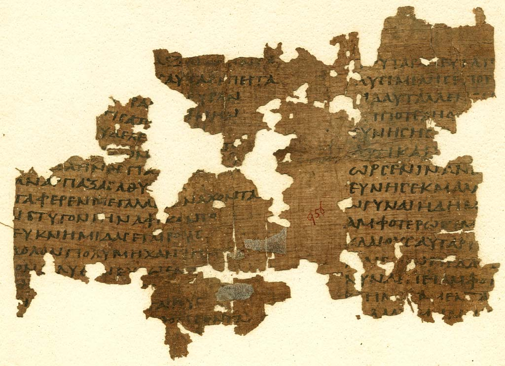
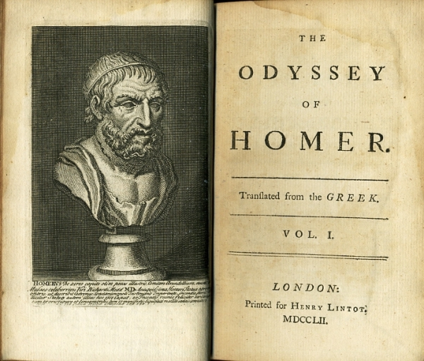
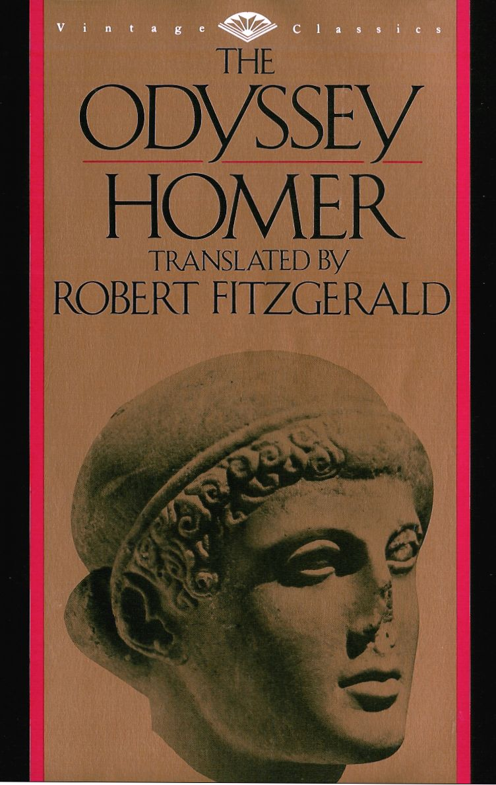
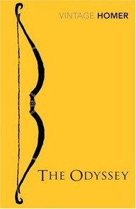
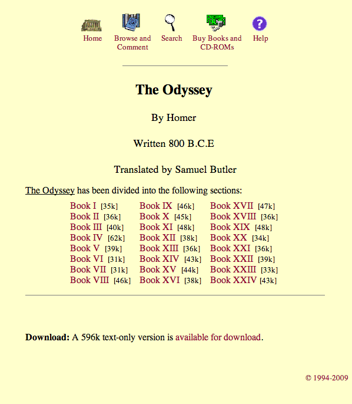
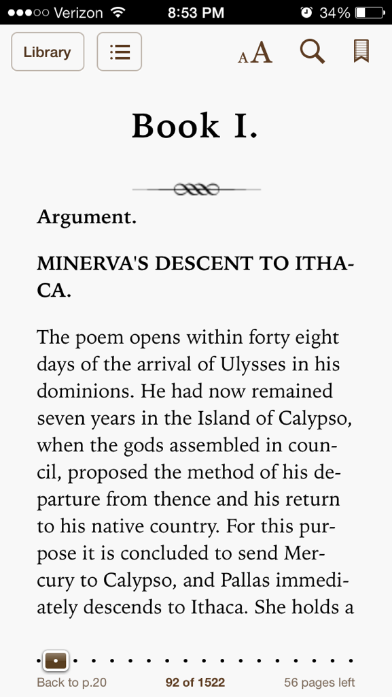

Interactive design

Web design and print design use many of the same concepts, including color, grid, typography and form, and other aspects we've talked about this semester, with some variations, like different color pallets and font faces. As we begin to learn more advanced concepts in CSS, JavaScript and HTML, the differences between designing for web and print become more important to think about.
On a formal level, content on a website can do things that print designs do not, like change size, include animation, changing content, sound, video, and other multi-media assets. On a conceptual level, the way that readers interact with a web page is very different from the way people look at traditional print design forms like magazines or posters. Viewing a webpage is a more transient experience that involves user interaction and movement. Technical considerations often play into the design of a website, because the experience of reading a website is affected by the time that content takes to render and other considerations specific to the way we interact with computers and other devices. Web designers have to accept that their work will often have slight variations from their original designs, no matter how much effort goes into controlling the variables introduced by screen resolution, browser differences and technical variation between devices, something print designers don't worry about.
 Print dimensions and sizes are relatively standardized. Web sites are viewed at a variety of resolutions and dimensions. We began looking at resizing content last week with fluid and elastic layouts. New devices like smart phones and tablets have increased the complexity that web designers have to account for in making layouts. CSS media queries help us develop with devices in mind.
Print publications tend to move in one or two directions. Top to bottom, left to right, one page to the next. Websites usually involve navigation, which allows the user to move between sections of content in a non-linear fashion. The design of a navigation menu, which we have spent some time with this semester, is essential for a website to function. Today we will learn some transition effects to make navigation a more durational and eye catching experience. But legibility remains the most essential aspect of any navigation menu. Because websites provide content in a non-linear setting, it is important to make the user always aware of how to get the information they want, and how to get back to where they came from, on any given page.
As we begin looking at style transitions, animation, and more advanced CSS styles, a lot of new functionality and visual tricks will be available to us. The key in using these effects is to be purposeful with the implementation. It isn't enough to add a duration effect just to show off that you have learned some CSS3. It has to have a reason for being used.
We looked at including hover states and interactive features in wireframes, but many effects that are possible on a webpage are not possible to recreate in visual editors like Photoshop and Illustrator. When working on projects that call for durational transitions, animation and other moving elements, these transitions are usually described by designers in English, but it represents a point at which it becomes easier to design using code than a graphical interface.
- Some portfolio websites
- Dear Gerry Graf
- R Leonardi
- Mark Forscher
- Brooklyn Research
- Reed + Rader
- Stewart Smith